The mark · the mechanic · the hook
Not an orb. A seal — the oldest mark in the world for “I vouch for this.” It's a logo, a product feature and an ad campaign at the same time, and no hiring app on earth is using it.
Deep jade wax, brass ring, brass A, pressed into ivory cotton paper. This is the hero frame — the one that goes on the landing page and stops the scroll.
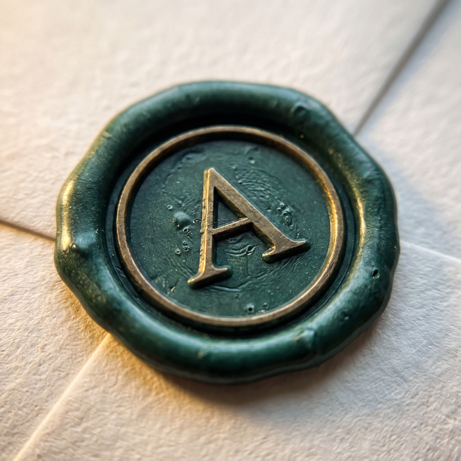
Real SVG, not a shrunk photo — so it stays razor sharp in the sidebar at 16px and on a billboard. Three cuts; my pick is the first.
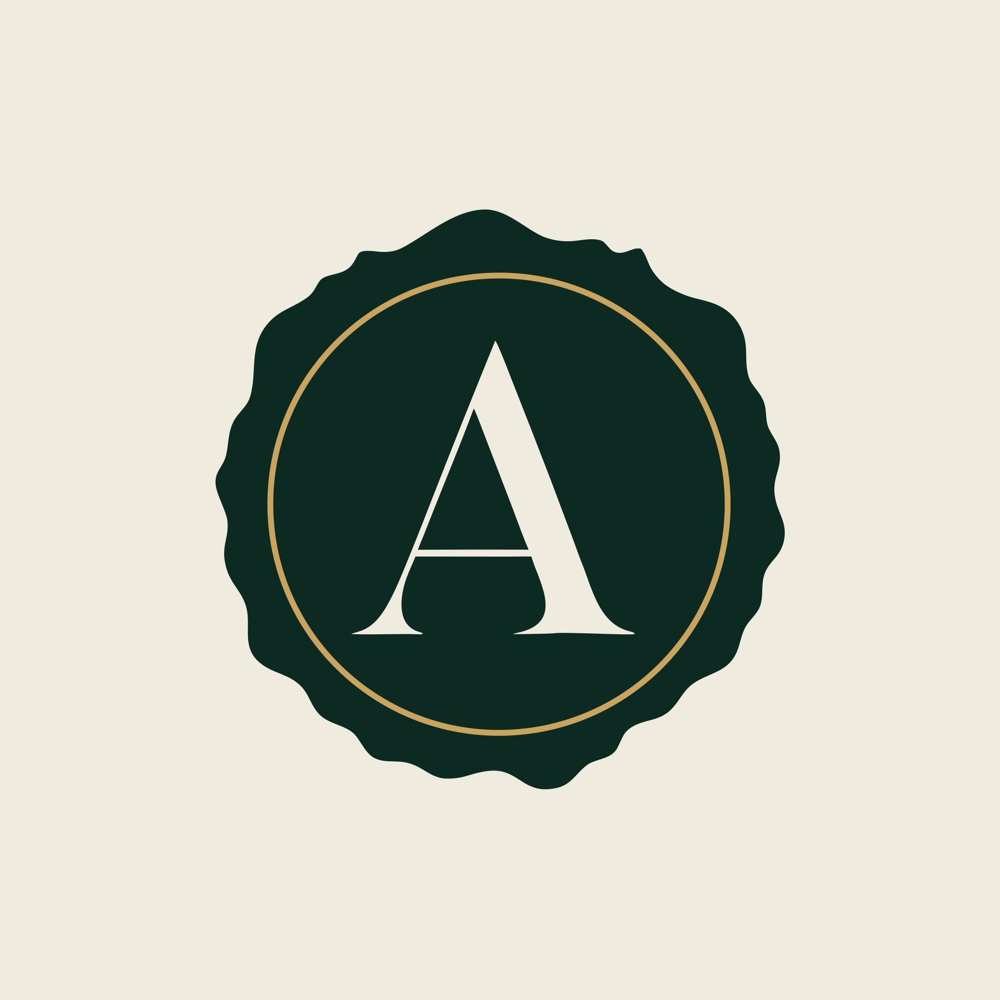
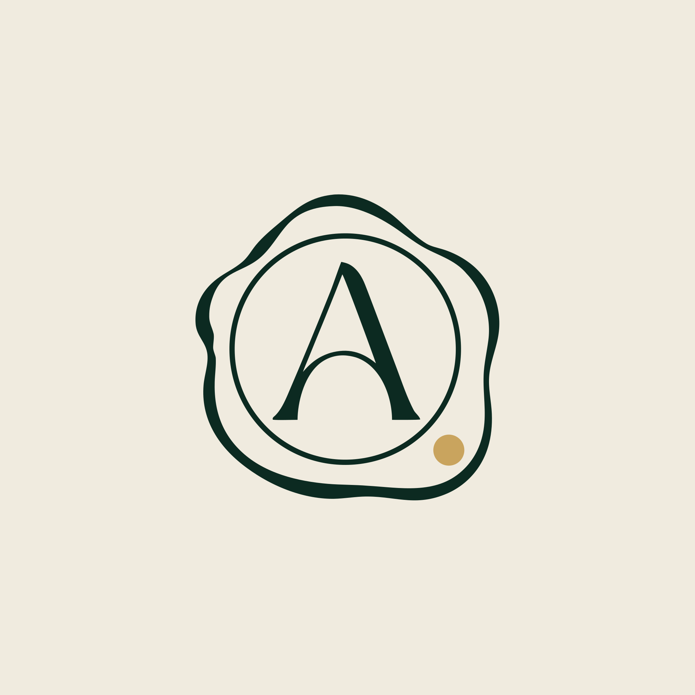
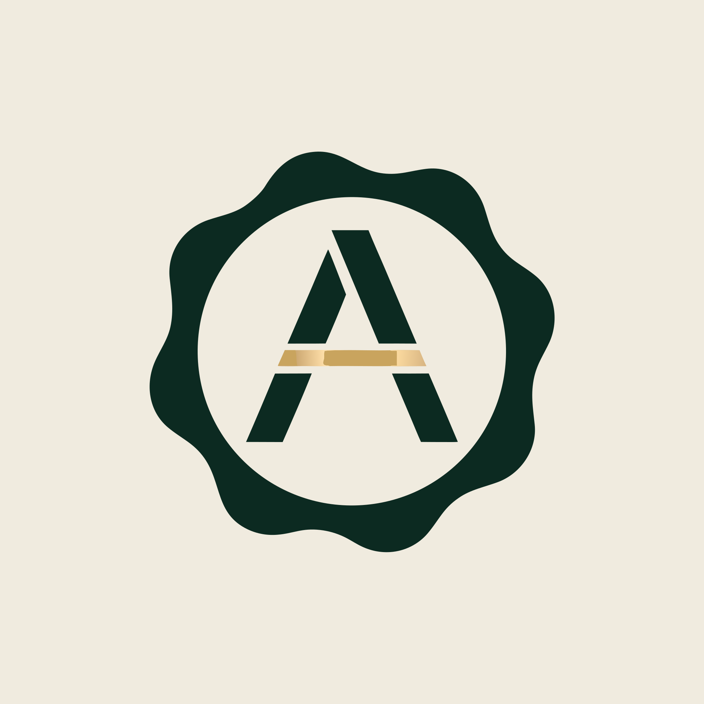
One frame that tells the whole story with no copy: the pile nobody wants to read, and the three she vouched for.
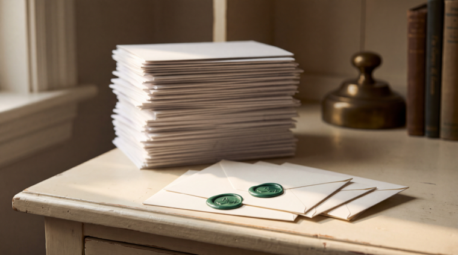
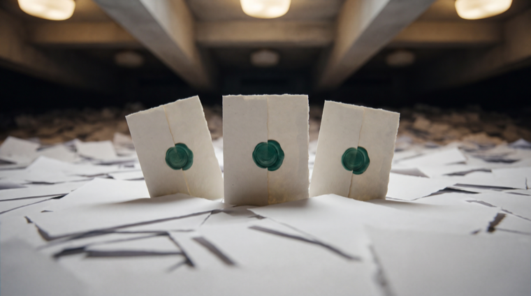
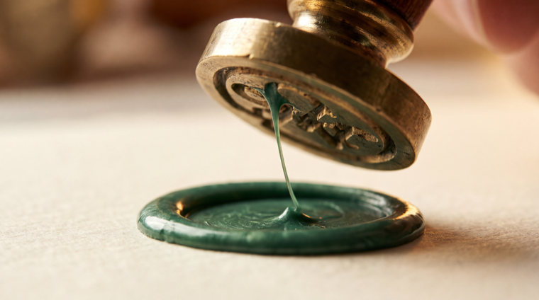
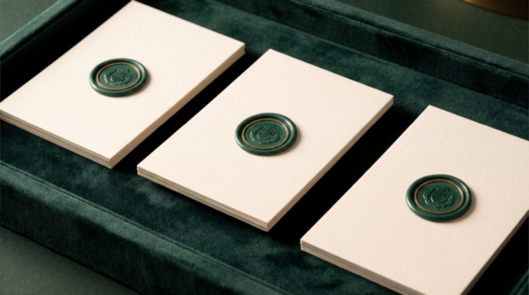
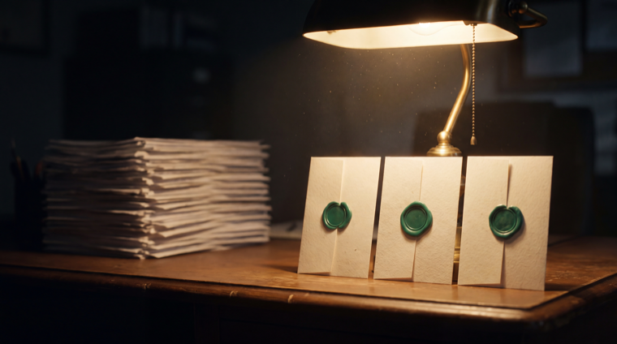
Same photograph, headline in the empty half. This is the landing page hero and the Facebook ad, unchanged.
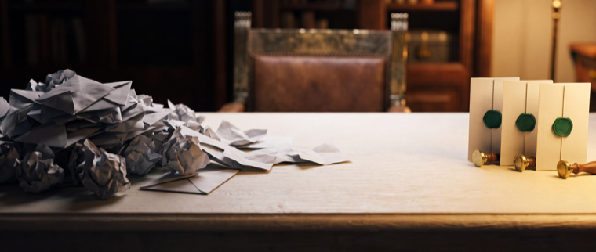
Ava reads every one, interviews every one, and seals the ones you should meet.
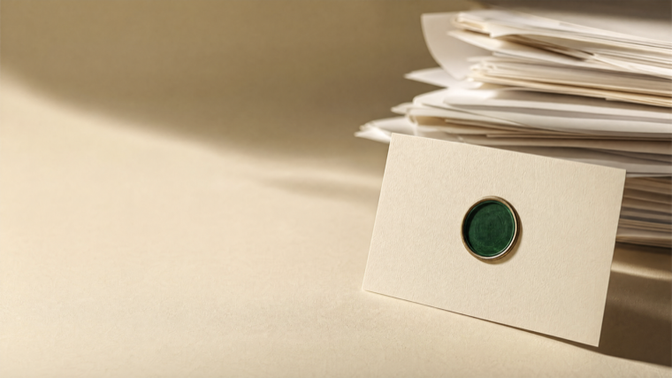
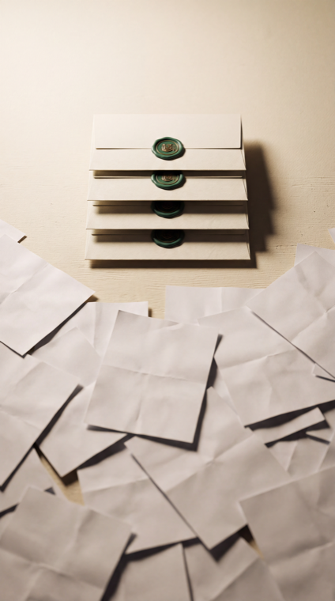
An orb is what every AI product on earth uses, which is exactly why it reads as generic — it means nothing. A seal already means something to everyone before you explain it: somebody with authority looked at this and put their name on it. That is literally Ava's job.
It also gives you a mechanic, not just a logo. “Ava sealed 3 of 41” is a real sentence in the product, a real number on the dashboard, and a real line in an ad. The seal can press down on screen the moment she finishes a candidate. You can print it on the window flyer. You can emboss it on a business card.
And it belongs to the ivory world you already picked — wax on paper. The dark jade against warm ivory is the contrast that photographs, which is the thing you said you need before you spend money on ads.